rm(list = ls())
packages <- c(
"tidyverse", # pipes, dplyr, ggplot2
"modelsummary", # datasummary_skim(), datasummary_correlation(), modelsummary()
"car", # vif(), crPlots()
"olsrr", # ols_plot_resid_lev(), ols_plot_cooksd_bar(), ols_plot_dfbetas()
"lmtest", # resettest(), bptest(), bgtest(), coeftest()
"sandwich", # vcovHC(), vcovHAC()
"reshape2", # melt()
"forecast", # Acf()
"nortest", # ad.test(), cvm.test()
"tseries", # jarque.bera.test()
"marginaleffects", # predictions(), slopes(), comparisons()
"knitr" # kable()
)
missing <- packages[!packages %in% rownames(installed.packages())]
if (length(missing) > 0) install.packages(missing)
invisible(lapply(packages, library, character.only = TRUE))Regression Diagnostics
Companion Notebook
ECONGA-1001.001: Applied Statistics and Econometrics I
New York University
Introduction
Before we start performing statistical hypothesis tests intended to draw economic meaning out of the model, our first tests should concern the question: is this a good model?
It would be nice if there was a statistical test along the lines of:
\[\left\{\begin{array}{l}H_{0}: \text{My model is awesome.}\\ H_{a}: \text{My model is not so awesome.} \end{array}\right.\]
Unfortunately, troubleshooting a regression is not that simple and requires assessing a number of different factors.
The Art of Regression Diagnostics
Regression diagnosis is an iterative process, but there is a natural order:
Conditions that cause outright numerical errors. Multicollinearity is one of those: it can produce unstable systems of equations and, in extreme cases, outright incorrect answers. Any problem here usually means you cannot proceed until it is fixed. Multicollinearity is usually diagnosed using Variance Inflation Factors (VIFs). Additional checks at this stage include assessing the influence of missing values in the dataset and verifying that the important parameters are identifiable. (Missing combinations of discrete independent variables can sometimes cause trouble here.)
Whether the output reflects most of the data or is sensitive to a small subset. In the latter case, everything else you subsequently do may be misleading. Procedures include examination of outliers and of leverage. (A high-leverage observation might not be an outlier, but it may still unduly influence all the results.) If a robust alternative to the regression procedure exists (e.g. robust regression with
MASS::rlm()), this is a good time to apply it: check that it produces similar results and use it to detect outlying values.The statistical assumptions needed for correct interpretation of the output. Having achieved a situation that is numerically stable (so you can trust the computations) and which reflects the full dataset, you turn to the distribution of the residuals - in rough order of importance: non-linearity, heteroskedasticity, autocorrelation, and non-normality.
At any stage, if something needs to be corrected, it’s wise to return to the beginning. Repeat as many times as necessary.
If we collect the various problems that can arise, we can rank them in terms of severity roughly as:
\[\text{outliers} > \text{non-linearity} > \text{heteroskedasticity} > \text{autocorrelation} > \text{non-normality}\]
1 Setup
2 The Data and the Model
To understand the troubleshooting process in a practical setting we will look at a multiple regression model that predicts:
\(Y\) - survey respondents’ perceived levels of climate change risk (0 to 10, higher numbers = more concerned)
using as independent variables (\(X\)s):
- political ideology (1 to 7, higher numbers = more conservative)
- age
- household income
- educational achievement (1 = less than high school, 8 = PhD/JD/MD)
See Paper, Data source, Codebook.
ds <- read.csv("https://wwwedu.github.io/NYU_1101/Diagnostics/MSISNetWave12.csv")
dim(ds)[1] 2547 207Since the dataset is rather large we’ll just grab the first 500 observations of the variables of interest.
ds.small <- ds %>%
dplyr::select(glbcc_risk, age, education, income, ideol) %>%
slice(1:500)
head(ds.small)The results of the regression model are as follows:
ols1 <- lm(glbcc_risk ~ age + education + income + ideol, data = ds.small)
summary(ols1)
Call:
lm(formula = glbcc_risk ~ age + education + income + ideol, data = ds.small)
Residuals:
Min 1Q Median 3Q Max
-7.1617 -1.7131 -0.0584 1.7216 6.8981
Coefficients:
Estimate Std. Error t value Pr(>|t|)
(Intercept) 1.208e+01 7.247e-01 16.676 <2e-16 ***
age -5.559e-03 8.407e-03 -0.661 0.509
education -1.861e-02 6.979e-02 -0.267 0.790
income 1.923e-07 2.227e-06 0.086 0.931
ideol -1.224e+00 6.630e-02 -18.454 <2e-16 ***
---
Signif. codes: 0 '***' 0.001 '**' 0.01 '*' 0.05 '.' 0.1 ' ' 1
Residual standard error: 2.353 on 445 degrees of freedom
(50 observations deleted due to missingness)
Multiple R-squared: 0.4365, Adjusted R-squared: 0.4315
F-statistic: 86.19 on 4 and 445 DF, p-value: < 2.2e-16The ideology coefficient is highly significant and negative, indicating that concern for climate change risk declines as we move towards the conservative end of the ideology spectrum. Note however that the regression summary reports “50 observations deleted due to missingness.”
3 Missing Values
Prepackaged econometrics functions deal with missing data in different ways. It’s best to be on top of it and handle it as you see appropriate. Many data summary tables report missing values, for example:
datasummary_skim(ds.small)| Unique | Missing Pct. | Mean | SD | Min | Median | Max | Histogram | |
|---|---|---|---|---|---|---|---|---|
| glbcc_risk | 12 | 0 | 5.8 | 3.1 | 0.0 | 6.0 | 10.0 |  |
| age | 64 | 0 | 60.3 | 13.4 | 23.0 | 62.0 | 96.0 |  |
| education | 8 | 0 | 5.2 | 1.7 | 1.0 | 6.0 | 8.0 |  |
| income | 114 | 9 | 74696.6 | 52298.7 | 10000.0 | 60000.0 | 400000.0 |  |
| ideol | 8 | 1 | 4.7 | 1.7 | 1.0 | 5.0 | 7.0 |  |
Most of the missing values come from income. Dropping rows with missing values (listwise deletion) is reasonable when whether a value is missing is unrelated to the outcome. If it isn’t - say, people who are more worried about climate change are also more likely to skip the income question - a large sample won’t remove the bias. In that case, try imputing the missing values instead; R has a number of powerful packages for this.
Here we’ll drop any rows with missing values:
ds.small <- ds.small %>% drop_na() # filter out NAs
rownames(ds.small) <- 1:nrow(ds.small) # reindex without the missing rows
datasummary_skim(ds.small)| Unique | Missing Pct. | Mean | SD | Min | Median | Max | Histogram | |
|---|---|---|---|---|---|---|---|---|
| glbcc_risk | 11 | 0 | 5.9 | 3.1 | 0.0 | 6.0 | 10.0 |  |
| age | 63 | 0 | 59.8 | 13.4 | 23.0 | 61.0 | 88.0 |  |
| education | 8 | 0 | 5.2 | 1.7 | 1.0 | 6.0 | 8.0 |  |
| income | 113 | 0 | 74587.9 | 52344.6 | 10000.0 | 60000.0 | 400000.0 |  |
| ideol | 7 | 0 | 4.7 | 1.7 | 1.0 | 5.0 | 7.0 |  |
We’ve confirmed there is no missing data, so we re-estimate the model:
ols1 <- lm(glbcc_risk ~ age + education + income + ideol, data = ds.small)
summary(ols1)
Call:
lm(formula = glbcc_risk ~ age + education + income + ideol, data = ds.small)
Residuals:
Min 1Q Median 3Q Max
-7.1617 -1.7131 -0.0584 1.7216 6.8981
Coefficients:
Estimate Std. Error t value Pr(>|t|)
(Intercept) 1.208e+01 7.247e-01 16.676 <2e-16 ***
age -5.559e-03 8.407e-03 -0.661 0.509
education -1.861e-02 6.979e-02 -0.267 0.790
income 1.923e-07 2.227e-06 0.086 0.931
ideol -1.224e+00 6.630e-02 -18.454 <2e-16 ***
---
Signif. codes: 0 '***' 0.001 '**' 0.01 '*' 0.05 '.' 0.1 ' ' 1
Residual standard error: 2.353 on 445 degrees of freedom
Multiple R-squared: 0.4365, Adjusted R-squared: 0.4315
F-statistic: 86.19 on 4 and 445 DF, p-value: < 2.2e-16On the basis of the R output, the model appears to be quite reasonable, with a statistically significant estimated partial regression coefficient for political ideology. But let’s take a closer look.
4 Multicollinearity
In practical terms, detecting multicollinearity can begin by examining pairwise correlations of our independent variables.
datasummary_correlation(ds.small)| glbcc_risk | age | education | income | ideol | |
|---|---|---|---|---|---|
| glbcc_risk | 1 | . | . | . | . |
| age | -.06 | 1 | . | . | . |
| education | .04 | -.10 | 1 | . | . |
| income | -.01 | -.13 | .28 | 1 | . |
| ideol | -.66 | .06 | -.07 | .02 | 1 |
While education vs. income has a slightly elevated correlation coefficient, it is not that concerning.
Even better, we can look at the variance inflation factors (VIFs). Pairwise correlations can miss collinearity that involves three or more variables; VIFs don’t, because each one comes from regressing one \(X\) on all the others:
vif(ols1) age education income ideol
1.024094 1.098383 1.101733 1.009105 We find no VIFs over 10 (or even 5), which means we don’t have to worry about multicollinearity with this model.
But if multicollinearity is suspected, what can you do? One option is to drop one of the highly collinear variables. However, this may result in model mis-specification (omitted variable bias). As with other modeling considerations, you must use theory as a guide. A second option would be to add new data, thereby lessening the threat posed by multicollinearity. A third option would be to obtain data from specialized samples that maximize independent variation in the collinear variables (e.g., elite samples may disentangle the effects of income, education, and other variables related to socio-economic status).
Yet another strategy involves reconsidering why your data are so highly correlated. It may be that your measures are in fact different “indicators” of the same underlying theoretical concept. This can happen, for example, when you measure sets of attitudes that are all influenced by a more general attitude or belief system. In such a case, data scaling is a promising option: build an additive scale, or use one of the various scaling options in R.
Another approach would be to use techniques such as factor analysis to tease out the underlying (or “latent”) variables represented by your indicator variables. Indeed, the combination of factor analysis and regression modeling is an important and widely used approach, referred to as structural equation modeling (SEM), which you can study in more advanced courses.
5 Outliers, Leverage and Influence
It is also important to examine the regression residuals for “unusual” observations. Unusual observations may be cases of mis-coding (e.g., \(-99\)), mis-measurement, or special cases that require different treatment in the model. The unusual cases we should be most concerned about are regression outliers that are potentially influential and that are suspect because of their differences from other cases.
Why should we worry about outliers? Recall that OLS minimizes the sum of the squared residuals. Unusual cases - which by definition have large residuals - can substantially influence our estimates of \(\hat\beta\), because their already large residuals are squared. A large outlier can thus change the model intercept and slope.
Several steps can help identify outliers and their effects on your model. The first - and most obvious - is to examine the range of values in your \(Y\) and \(X\) variables. Do they fall within the appropriate ranges? This step - too often omitted even by experienced analysts - can help you avoid agonizing mis-steps that result from including mis-coded data or missing values (e.g., \(-99\)) that need to be recoded before running your model. If you fail to identify these problems, they will show up in your residual analysis as outliers, but it is much easier to catch them before you run the model. (The datasummary_skim() tables above already show the min and max of each variable.)
But sometimes we find outliers for reasons other than mis-codes, and identifying them requires careful examination of the residuals. First we look at outliers (unusual values of \(Y\)) and leverage (unusual values of \(X\)), since they are closely related.
5.1 Detecting outliers
Let’s begin by looking at any \(Y\) outliers.
Using the lower quartile \(Q_1\) and the upper quartile \(Q_3\), we can define the interquartile range as
\[IQR = Q_3 - Q_1\]
also known as the midspread, which defines a standard boxplot. Based on the \(IQR\), Tukey defined an outlier as any observation outside the interval
\[\left[Q_1 - k \times IQR,\ Q_3 + k \times IQR\right]\]
where we usually take \(k = 1.5\). The lower and upper bounds are marked in the boxplot by the whiskers; points plotted beyond them can be considered outliers.
y <- ds.small$glbcc_risk
par(mfrow = c(1, 2))
boxplot(y, main = "Y")
boxplot(y, outline = FALSE, main = "Y, no outliers")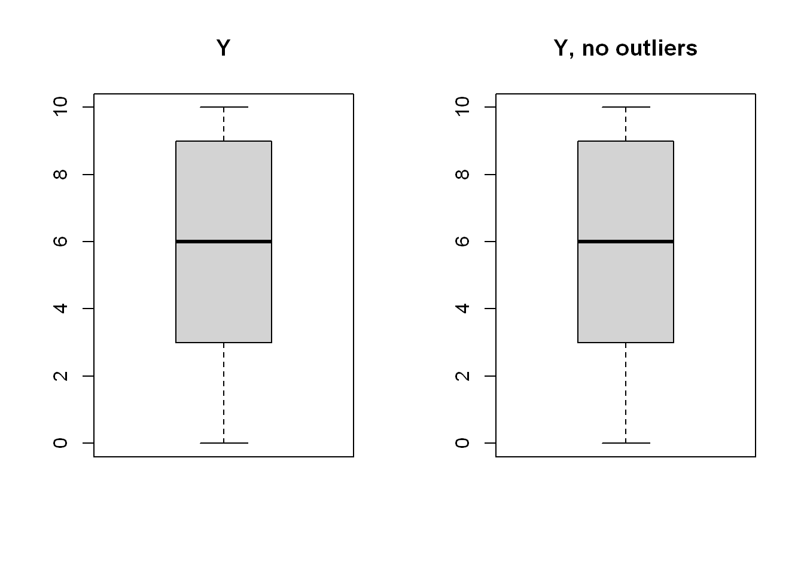
No difference: no value of \(Y\) lies outside the whiskers. We can also look at the actual distribution (i.e. the histogram):
layout(mat = matrix(c(1, 2), nrow = 2, ncol = 1, byrow = TRUE), heights = c(2, 4))
par(mar = c(2, 2, 2, 2))
boxplot(y, horizontal = TRUE)
hist(y, breaks = 10, main = "Histogram of Y")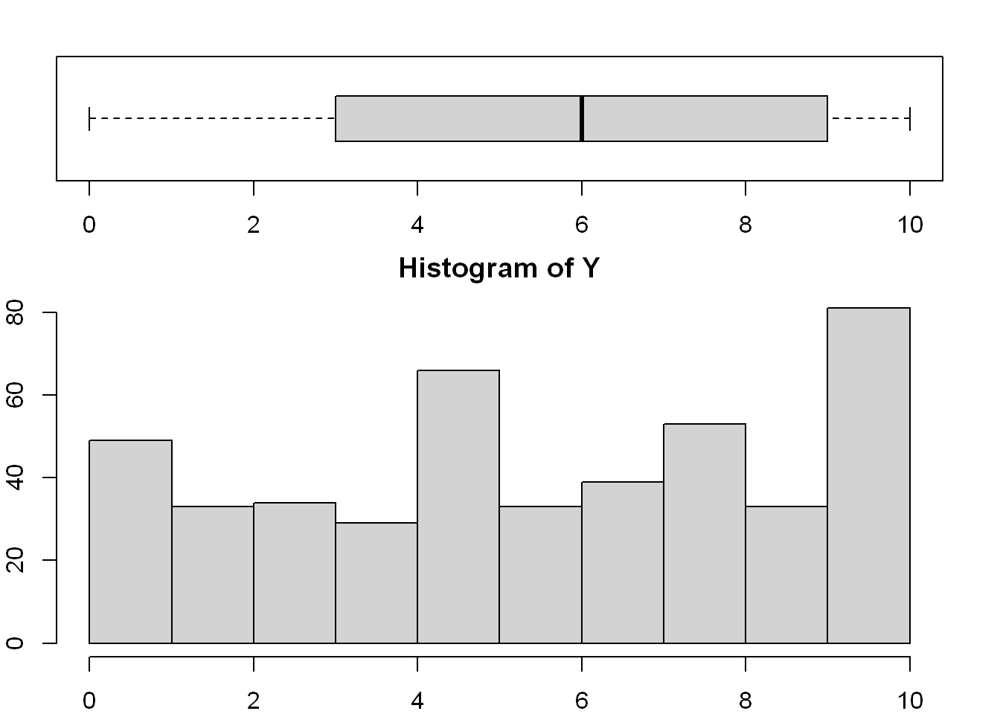
We’ll now bring in the influence of the independent variables by looking at the residuals:
r <- residuals(ols1)
plot(r, main = "Residuals")
abline(h = 0, col = "red")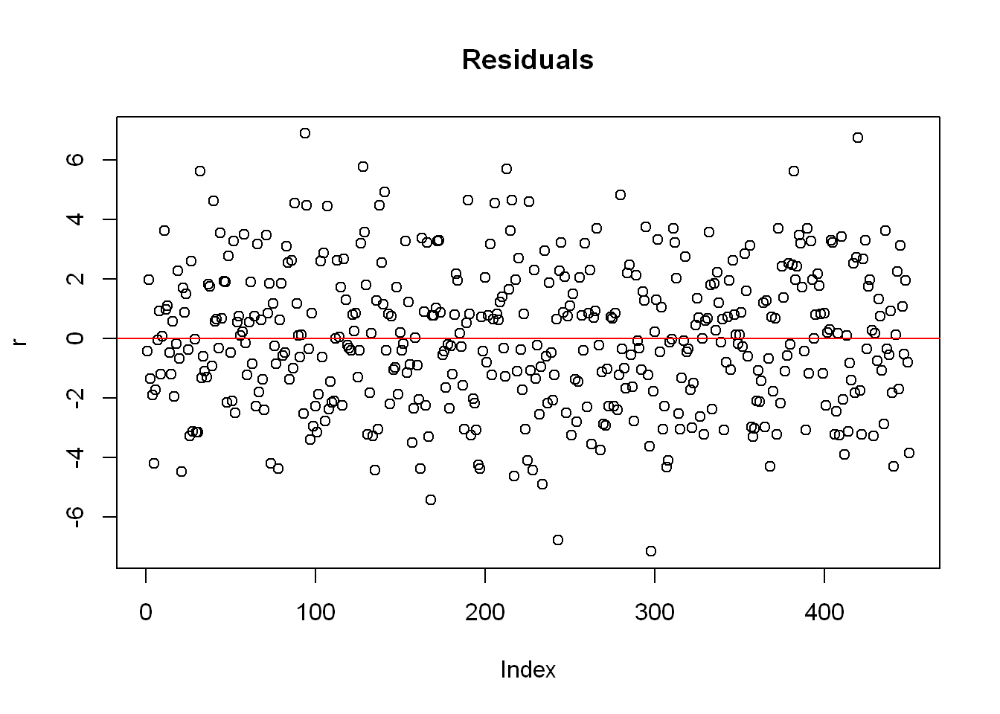
layout(mat = matrix(c(1, 2), nrow = 2, ncol = 1, byrow = TRUE), heights = c(2, 4))
par(mar = c(2, 2, 2, 2))
boxplot(r, horizontal = TRUE)
hist(r, breaks = 10, main = "Histogram of Residuals")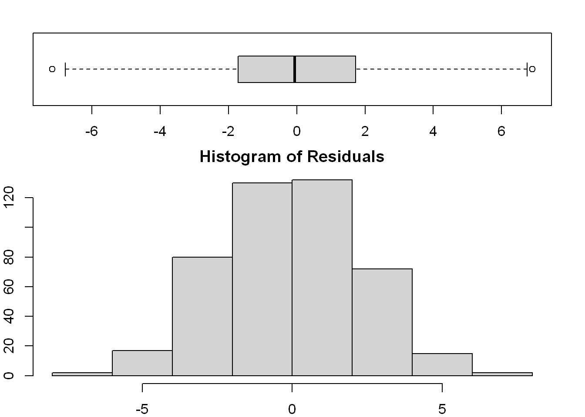
Next, we can sort the residuals and find the cases with the largest positive and negative values:
sorted.residuals <- sort(residuals(ols1), decreasing = TRUE) # largest first
head(sorted.residuals, 1) 94
6.898077 tail(sorted.residuals, 1) 298
-7.161695 Then we can examine the \(X\) and \(Y\) values of those cases:
ds.small[c(298, 94), c("age", "education", "income", "ideol", "glbcc_risk")]Case 298 is an outlier because its observed \(Y\) is far from what would be expected given its values of \(X\): a wealthy, older liberal would most likely rate climate change as riskier than a 2. In case 94, a strong conservative rates climate change risk at the highest possible value. This observation, while not consistent with the estimated relationship between ideology and environmental concern, is certainly not implausible. But the unusual combination of a strong conservative leaning and a high perceived risk results in a large residual.
5.2 Leverage
Leverage measures how far an observation’s values of the predictors, \(\mathbf{X}\), are from the means of the predictors. For the linear regression model, the leverage score for the \(i\)-th observation is the \(i\)-th diagonal element of the projection (“hat”) matrix \(\mathbf{P}=\mathbf{X}\left(\mathbf{X}'\mathbf{X}\right)^{-1}\mathbf{X}'\), which is equivalent to the partial derivative of \(\widehat{Y}_i\) with respect to \(Y_i\):
\[h_{ii}=\frac{\partial \widehat{Y}_i}{\partial Y_i}=(\mathbf{P})_{ii}\]
Defining leverage via the partial derivative lets us interpret it as the observation’s self-influence: how much the actual value \(Y_i\) pulls its own fitted value \(\widehat{Y}_i\).
A useful visual tool plots the studentized residuals against leverage:
ols_plot_resid_lev(ols1)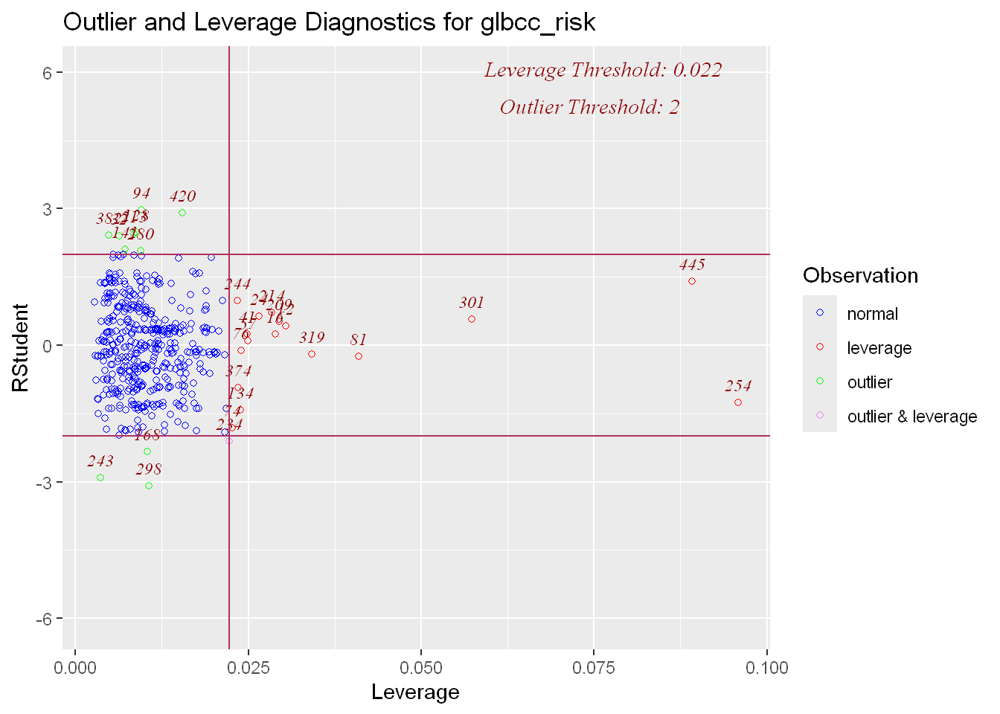
5.3 Influence: Cook’s distance
What we really want to know is: does any particular case substantially change the regression results? If it does, the case is said to have influence. A case can be an outlier without being influential, and influential without being an outlier (a high-leverage point that lies close to the line, for example).
Cook’s distance summarizes the influence of case \(i\) in a single number: how much all the fitted values change when case \(i\) is removed. It combines the two ideas above - a case is influential when it has both a large residual and high leverage:
\[D_i = \frac{\sum_{j}\left(\widehat{Y}_j - \widehat{Y}_{j(-i)}\right)^2}{k\, s^2}\]
where \(\widehat{Y}_{j(-i)}\) is the fitted value for case \(j\) when case \(i\) is removed, \(k\) is the number of coefficients, and \(s^2\) is the residual variance. A common rule of thumb flags cases with \(D_i > 4/n\); values near 1 indicate a case that substantially moves the estimates.
ols_plot_cooksd_bar(ols1)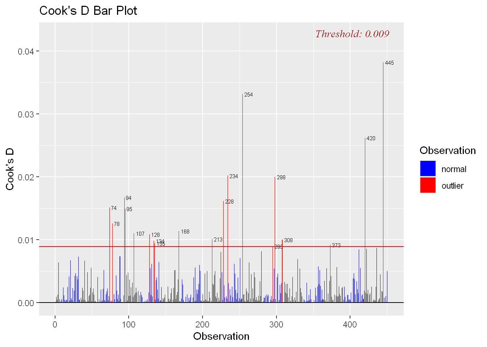
head(sort(cooks.distance(ols1), decreasing = TRUE), 5) 445 254 420 234 298
0.03819503 0.03317838 0.02618197 0.02017779 0.01999440 Several cases exceed the \(4/n\) threshold, but the largest Cook’s distance is far below 1. We’ll take a closer look at the most influential case, 445, below.
5.4 Influence: DFBETAS
Cook’s distance tells us whether a case moves the results; DFBETAS tell us which coefficients it moves. DFBETAS measure the influence of case \(i\) on each estimated coefficient \(B_j\): by how many standard errors does \(B_j\) change when case \(i\) is removed?
\[\text{DFBETAS}_{ij}=\frac{B_j - B_{j(-i)}}{SE\left(B_j\right)}\]
where \(B_{j(-i)}\) is the estimate with case \(i\) removed. If \(\text{DFBETAS}_{ij} > 0\), case \(i\) pulls \(B_j\) up; if \(\text{DFBETAS}_{ij} < 0\), it pulls \(B_j\) down. Since a DFBETAS value is calculated for each variable for each case, there are many of them. In general, cases with \(\left|\text{DFBETAS}_{ij}\right| > \frac{2}{\sqrt{n}}\) warrant further examination.
cutoff <- 2 / sqrt(nrow(ds.small))
round(cutoff, 3)[1] 0.094df.ols1 <- dfbetas(ols1)
head(df.ols1) (Intercept) age education income ideol
1 -0.004396485 0.005554545 0.01043817 -0.01548697 -0.005616679
2 0.046302381 -0.007569305 -0.02671961 -0.01401653 -0.042323468
3 -0.002896270 0.018301623 -0.01946054 0.02534233 -0.023111519
4 -0.072106074 0.060263914 0.02966501 0.01243482 0.015464937
5 -0.057608817 -0.005345142 -0.04948456 0.06456577 0.134103149
6 0.008388099 -0.018985904 -0.02227335 0.01918300 0.014382282ols_plot_dfbetas(ols1)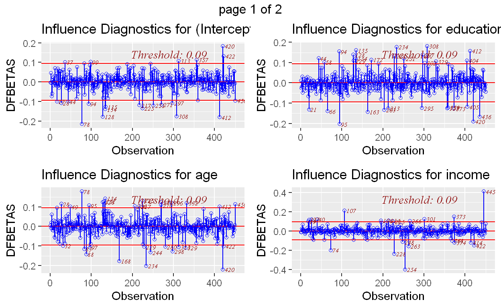
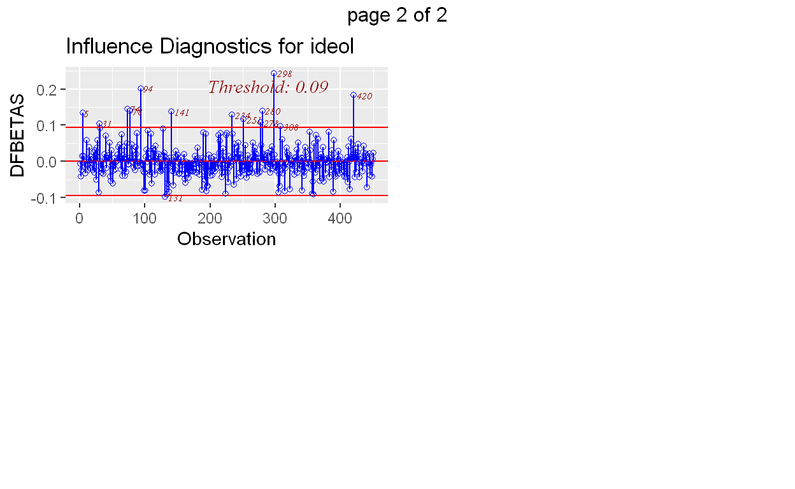
Several cases exceed the 0.094 cut-off. That is expected: the cut-off shrinks with the sample size, so it will always flag some cases. Its job is to tell us which cases to look at. Next we find the case with the highest absolute DFBETAS value (the most extreme value could be negative, so we take abs() of both sides) and examine its \(X\) and \(Y\) values:
which(abs(df.ols1) == max(abs(df.ols1)), arr.ind = TRUE) row col
445 445 4ds.small[445, c("age", "education", "income", "ideol", "glbcc_risk")]It is the same case with the largest Cook’s distance. The most influential case is not implausible: a highly educated 46-year-old with a high income ($400,000), who is moderate and perceives very high risk from climate change. Its high income gives it high leverage, so it pulls the income coefficient up. We can be reassured that even in this most extreme case we do not have a problematic observation.
5.5 Addressing outliers
Having explored the residuals from our model, we found a number of outliers, some with noticeable influence on our model results. Inspection of the most extreme cases gave us no cause to worry that the observations were inappropriately distorting our results. But what should you do if you find puzzling, implausible observations that may influence your model?
First, as always, evaluate your theory. Is it possible that the case represents a class of observations that behave systematically differently from the other cases? This is of particular concern if you have a cluster of cases, all determined to be outliers, with similar properties. You may need to modify your theory to account for this subgroup. One such example can be found in the study of American politics, wherein the Southern states routinely appeared to behave differently than others. Most careful efforts to model state (and individual) political behavior account for the unique aspects of Southern politics, in ways ranging from the addition of dummy variables to interaction terms in regression models.
How would you determine whether the model (and theory) should be revised? Look closely at the deviant cases - what can you learn from them? Try experiments by running the models with controls - dummies and interaction terms. What effects do you observe? If your results suggest theoretical revisions, you will need to collect new data to test your new hypotheses. Remember: in empirical studies, you need to keep your discoveries distinct from your hypothesis tests.
Capping the outliers. If the explanatory variables \(X_{1,i}, \ldots, X_{k,i}\) of an outlying \(Y_i\) are similar to those of other observations with non-outlying values of \(Y\), we may cap the value of the outlier to match those values.
Replacing outliers with imputed values. If we are certain that the outlier is due to an error in the data itself, we can treat it as a missing value and impute it (for example with the Expectation-Maximization (EM) algorithm).
Deleting outliers. As a last resort, if you have troubling outliers that you cannot account for in theory, you might decide to omit those observations and re-run your analyses. This is not recommended, because it can appear to be a case of “jiggering the data” to get the results you want. If you do it, report the results with and without those cases.
6 Non-linearity
One of the most critical assumptions of OLS is that the relationships between variables are linear in their functional form.
To motivate the upcoming test procedure, consider the following example - assume that the true model is quadratic:
\[Y_{i}=\beta_{0}+\beta_{1} X_{i}^{2}+\epsilon_{i}, \quad X_{i} \sim \mathcal{N}(1,1),\ \epsilon_{i} \sim \mathcal{N}\left(0,0.5^{2}\right)\]
set.seed(123)
N <- 100
beta_vec <- c(0.5, 2)
x <- rnorm(mean = 1, sd = 1, n = N)
e <- rnorm(mean = 0, sd = 0.5, n = N)
y <- cbind(1, x^2) %*% beta_vec + e
plot(x, y)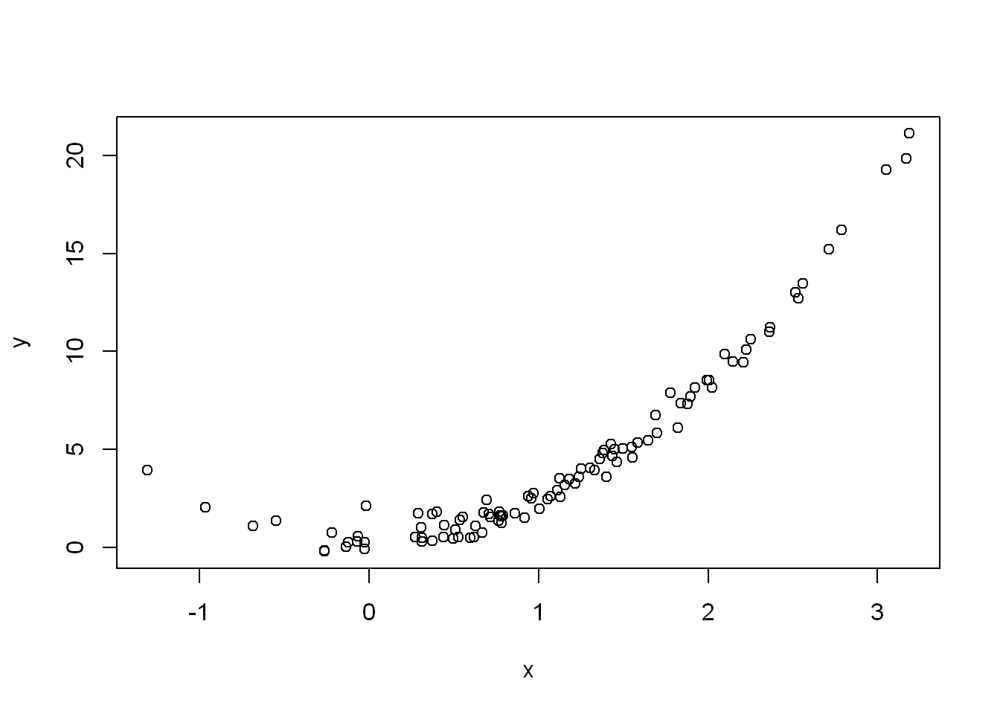
If we fit a straight line anyway:
mdl_quad <- lm(y ~ x)
plot(x, y, main = paste0("R^2 = ", round(summary(mdl_quad)$r.squared, 4)))
lines(x[order(x)], mdl_quad$fitted.values[order(x)])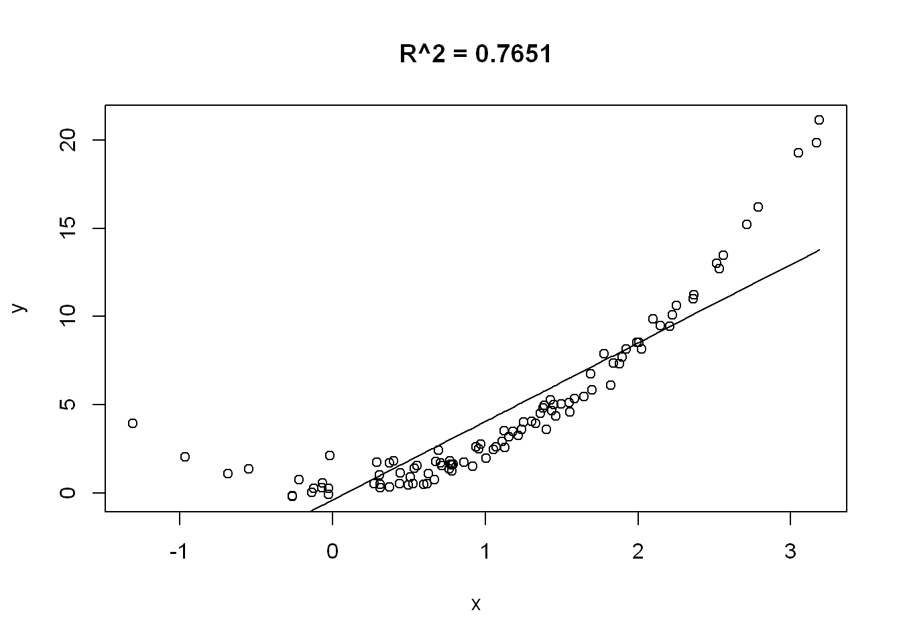
The \(R^2\) is high, but the residuals plotted against the fitted values show a clear U-shape:
plot(mdl_quad$fitted.values, mdl_quad$residuals)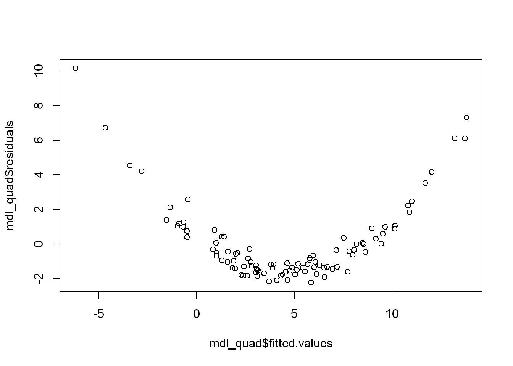
One solution to the non-linearity problem is polynomial regression. We can think of the polynomial model as the Taylor series expansion of the unknown function. Polynomial models are useful:
- in situations where the analyst knows that curvilinear effects are present in the true response function;
- as approximating functions to unknown and possibly very complex nonlinear relationships.
mdl_quad2 <- lm(y ~ x + I(x^2))
summary(mdl_quad2)
Call:
lm(formula = y ~ x + I(x^2))
Residuals:
Min 1Q Median 3Q Max
-0.96841 -0.36457 -0.05954 0.32720 1.66598
Coefficients:
Estimate Std. Error t value Pr(>|t|)
(Intercept) 0.45592 0.07802 5.844 6.83e-08 ***
x 0.07348 0.11081 0.663 0.509
I(x^2) 1.95540 0.04342 45.035 < 2e-16 ***
---
Signif. codes: 0 '***' 0.001 '**' 0.01 '*' 0.05 '.' 0.1 ' ' 1
Residual standard error: 0.4852 on 97 degrees of freedom
Multiple R-squared: 0.9893, Adjusted R-squared: 0.9891
F-statistic: 4476 on 2 and 97 DF, p-value: < 2.2e-16plot(mdl_quad2$fitted.values, mdl_quad2$residuals)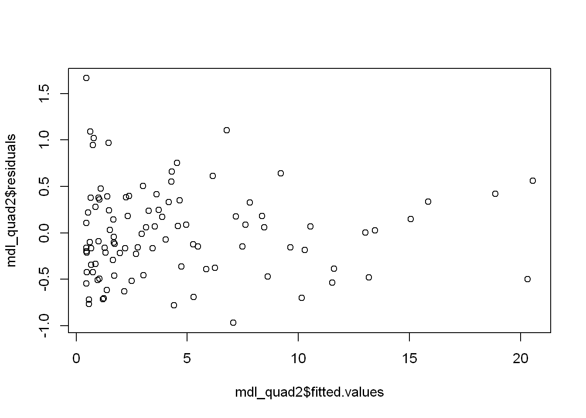
After including the polynomial term, the residuals look much more like white noise.
In a multiple regression it is more difficult to identify which regressor is responsible for the non-linear relationship. The car package helps with default component-plus-residual plots. Each panel plots one \(X\) against the residuals plus that variable’s own contribution, \(e_i + \hat\beta_j X_{ij}\) - the part of \(Y\) the other regressors don’t explain. The dashed line is the linear fit; the solid curve is a smoother that follows the data. If the two diverge, the relationship is not linear:
crPlots(ols1)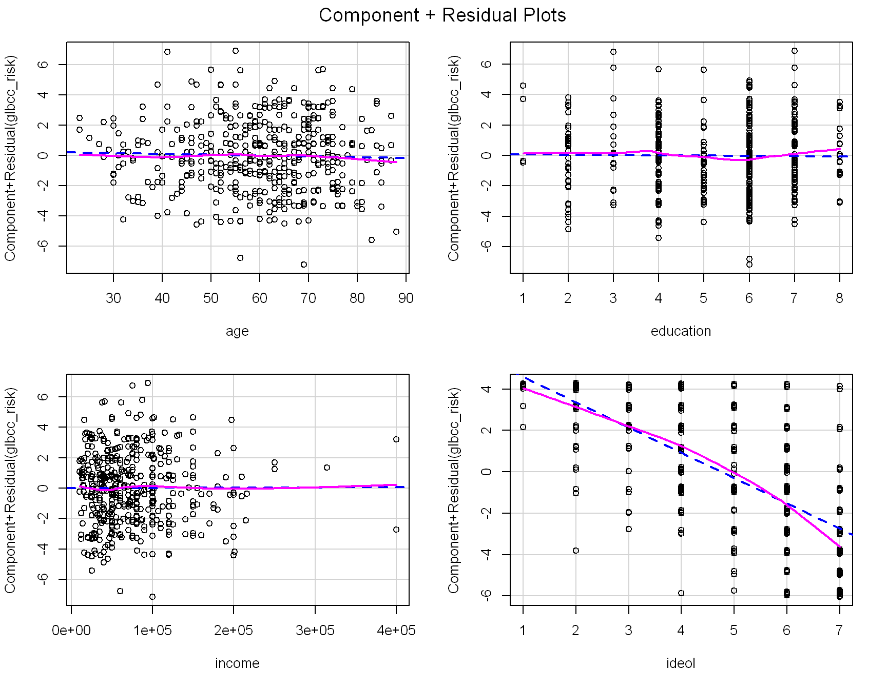
Age, education, and income follow their lines closely. For ideology, the smoother bends below the line at the conservative end: perceived risk falls faster there. We can check this visual analysis by squaring each term and using the ANOVA function for an F-test to compare model fit:
ds.small$age2 <- ds.small$age^2
ds.small$edu2 <- ds.small$education^2
ds.small$inc2 <- ds.small$income^2
ds.small$ideology2 <- ds.small$ideol^2
ols2 <- lm(glbcc_risk ~ age + age2 + education + edu2 + income + inc2 + ideol + ideology2, data = ds.small)
summary(ols2)
Call:
lm(formula = glbcc_risk ~ age + age2 + education + edu2 + income +
inc2 + ideol + ideology2, data = ds.small)
Residuals:
Min 1Q Median 3Q Max
-7.1563 -1.5894 0.0389 1.4898 7.3417
Coefficients:
Estimate Std. Error t value Pr(>|t|)
(Intercept) 9.661e+00 1.931e+00 5.004 8.12e-07 ***
age 2.973e-02 5.735e-02 0.518 0.604385
age2 -2.891e-04 5.010e-04 -0.577 0.564175
education -4.814e-01 3.589e-01 -1.341 0.180499
edu2 5.132e-02 3.722e-02 1.379 0.168723
income 2.853e-06 5.341e-06 0.534 0.593564
inc2 -1.131e-11 1.839e-11 -0.615 0.538966
ideol -5.726e-02 3.532e-01 -0.162 0.871279
ideology2 -1.327e-01 3.965e-02 -3.347 0.000886 ***
---
Signif. codes: 0 '***' 0.001 '**' 0.01 '*' 0.05 '.' 0.1 ' ' 1
Residual standard error: 2.33 on 441 degrees of freedom
Multiple R-squared: 0.4528, Adjusted R-squared: 0.4429
F-statistic: 45.61 on 8 and 441 DF, p-value: < 2.2e-16For ideology, only the squared term is significant, indicating that perceived risk of climate change declines at an increasing rate toward the most conservative end of the scale. This is consistent with the visual inspection of the residuals by ideology. (Note that the linear ideol term is no longer significant on its own - that does not mean ideology stopped mattering. With a squared term, the two coefficients have to be judged together.)
The question remains whether the polynomial terms improve overall model fit. We can check that with an analysis of variance across the simple model and the model with the squared terms:
anova(ols1, ols2)The F-test indicates that including the squared terms improves model fit, so the relationships include non-linear components.
Another general check is Ramsey’s RESET test, which adds powers of the regressors (or of the fitted values) to the model and tests whether they jointly improve the fit:
resettest(ols1, power = 2:3, type = "regressor")
RESET test
data: ols1
RESET = 2.2752, df1 = 8, df2 = 437, p-value = 0.02157Again, the test provides evidence of a non-linear relationship: we reject the null hypothesis that the restricted model (without the polynomial terms) is correctly specified.
What should we do when we identify a non-linear relationship between \(Y\) and the \(X\)s? The first step is to look closely at the bivariate plots to discern the correct functional form for each \(X\). If the relationship looks curvilinear, try a polynomial regression that includes both \(X\) and \(X^2\) for the relevant variables. It may also be that a skewed dependent or independent variable is causing the problem. This is not unusual when, for example, income plays an important role in the model, since the distribution of income is skewed upward. In that case, try transforming the skewed variable, for example with a log.
It is possible that variable transformations won’t suffice. In that case, you may have to try non-linear forms of regression.
7 Heteroskedasticity
The case when the error variance-covariance matrix is diagonal, but not equal to \(\sigma_{\epsilon}^{2} \mathbf{I}\),
\[ \boldsymbol{\Sigma}=\left[\begin{array}{ccccc} \sigma_{1}^{2} & 0 & 0 & \ldots & 0 \\ 0 & \sigma_{2}^{2} & 0 & \ldots & 0 \\ \vdots & \vdots & \vdots & \ddots & \vdots \\ 0 & 0 & 0 & \ldots & \sigma_{N}^{2} \end{array}\right] \]
is referred to as heteroskedasticity. Under heteroskedasticity:
- the OLS estimators remain unbiased;
- the OLS estimators are no longer efficient;
- the OLS variance estimator is biased and inconsistent;
- the usual \(t\)-statistics of the OLS estimates do not have Student’s \(t\) distribution, even in large samples.
Let’s simulate the following model:
\[ \begin{aligned} &Y_{i}=\beta_{0}+\beta_{1} X_{1, i}+\beta_{2} X_{2, i}+u_{i} \\ &u_{i}=i \cdot \epsilon_{i}, \quad \epsilon_{i} \sim \mathcal{N}\left(0, \sigma^{2}\right) \quad\left[\text { or } u_{i} \sim \mathcal{N}\left(0, i^{2} \cdot \sigma^{2}\right)\right] \end{aligned} \]
set.seed(123)
N <- 200
beta_vec <- c(10, 5, -3)
x1 <- seq(from = 0, to = 5, length.out = N)
x2 <- sample(seq(from = 3, to = 17, length.out = 80), size = N, replace = TRUE)
e <- rnorm(mean = 0, sd = 1:N, n = N)
x_mat <- cbind(1, x1, x2)
y <- x_mat %*% beta_vec + e
data_mat <- data.frame(y, x1, x2)We can detect heteroskedasticity from residual plots, as well as with a number of formal tests. We begin by estimating the model via OLS, as we usually would:
mdl_hc <- lm(y ~ x1 + x2, data = data_mat)
summary(mdl_hc)
Call:
lm(formula = y ~ x1 + x2, data = data_mat)
Residuals:
Min 1Q Median 3Q Max
-499.84 -45.70 -3.32 57.12 495.58
Coefficients:
Estimate Std. Error t value Pr(>|t|)
(Intercept) -0.8907 28.4237 -0.031 0.975
x1 7.2193 5.9343 1.217 0.225
x2 -1.8321 2.1888 -0.837 0.404
Residual standard error: 121.3 on 197 degrees of freedom
Multiple R-squared: 0.01188, Adjusted R-squared: 0.001848
F-statistic: 1.184 on 2 and 197 DF, p-value: 0.3081One way of investigating heteroskedasticity is to visually examine the OLS residuals. If they are homoskedastic, there should be no pattern in the residuals. If the errors are heteroskedastic, they will exhibit increasing or decreasing variation in some systematic way - for example, with larger values of \(\widehat{Y}\), or with larger values of \(X_j\).
par(mfrow = c(2, 2))
plot(mdl_hc$residuals, main = "Run-Sequence Plot")
plot(mdl_hc$fitted.values, mdl_hc$residuals, main = "Residuals vs Fitted")
plot(x1, mdl_hc$residuals, main = bquote("Residuals vs" ~ X[1]))
plot(x2, mdl_hc$residuals, main = bquote("Residuals vs" ~ X[2]))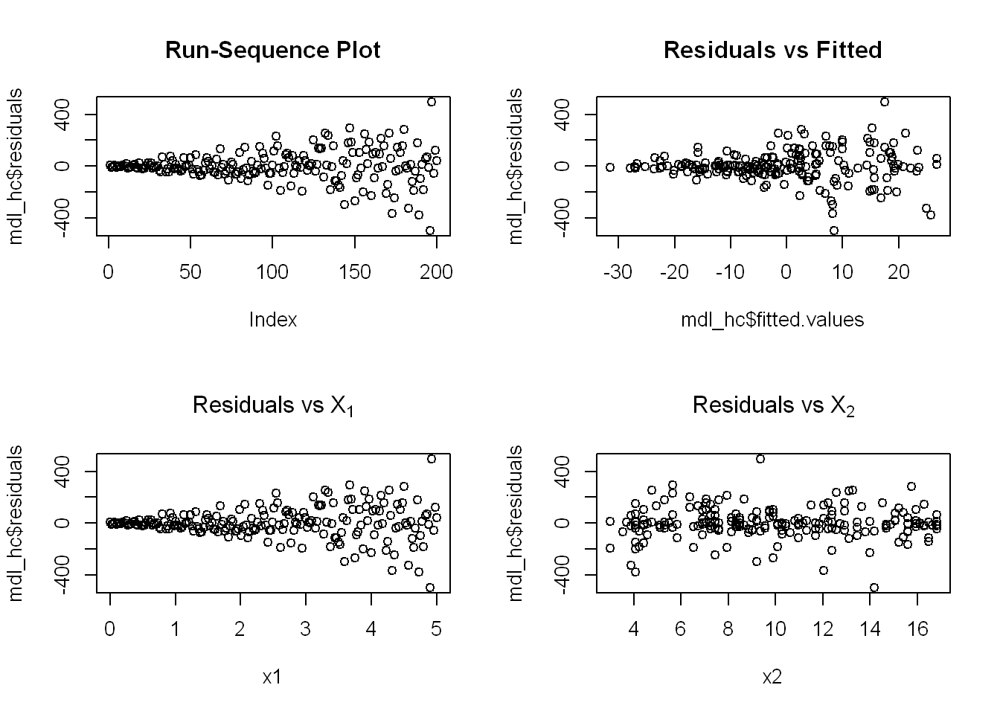
The Breusch-Pagan test has the null hypothesis of homoskedasticity:
bptest(mdl_hc)
studentized Breusch-Pagan test
data: mdl_hc
BP = 35.896, df = 2, p-value = 1.604e-08The p-value is below the 0.05 significance level, so we reject homoskedasticity: the residuals are heteroskedastic. Note that bptest() uses Koenker’s (1981) “studentized” version of the test by default (studentize = TRUE), which does not require normally distributed errors.
There are several steps to consider when confronted with heteroskedasticity. First, consider whether the model needs to be re-specified - for example, because of omitted variables or the wrong functional form. If re-specification does not correct the problem, we can keep the OLS estimates and use heteroskedasticity-robust standard errors, which are valid when the form of the error variance is unknown.
coeftest(mdl_hc, vcov. = vcovHC(mdl_hc, type = "HC3"))
t test of coefficients:
Estimate Std. Error t value Pr(>|t|)
(Intercept) -0.89066 26.87208 -0.0331 0.9736
x1 7.21929 6.96475 1.0365 0.3012
x2 -1.83213 2.22390 -0.8238 0.4110The coefficients are identical to OLS; only the standard errors change. (type can be "HC0" to "HC3"; HC1 is what Stata reports with , robust, and HC3 is the default in vcovHC() and behaves better in small samples.) Here, the conclusions about significance remain unchanged.
It is important to note that while robust standard errors can help atone for heteroskedasticity, their use is not an alternative to careful model construction. The first step should always be to evaluate the model specification and functional form (e.g., polynomials, relevant variables), as well as possible measurement error, before resorting to robust standard errors.
Weighted Least Squares. A more involved alternative is to model the heteroskedasticity and weight the observations accordingly. This method and its associated problems are covered in the GLS notebook.
resid_data <- data.frame(log_e2 = log(mdl_hc$residuals^2), x1, x2)
h_est <- exp(lm(log_e2 ~ x1 + x2, data = resid_data)$fitted.values)
mdl_wls <- lm(y ~ x1 + x2, data = data_mat, weights = 1 / h_est)
summary(mdl_wls)
Call:
lm(formula = y ~ x1 + x2, data = data_mat, weights = 1/h_est)
Weighted Residuals:
Min 1Q Median 3Q Max
-4.5762 -1.3421 -0.0546 1.2794 5.9209
Coefficients:
Estimate Std. Error t value Pr(>|t|)
(Intercept) -1.3924 10.1948 -0.137 0.8915
x1 7.9764 4.0033 1.992 0.0477 *
x2 -2.0246 0.8816 -2.297 0.0227 *
---
Signif. codes: 0 '***' 0.001 '**' 0.01 '*' 0.05 '.' 0.1 ' ' 1
Residual standard error: 2.076 on 197 degrees of freedom
Multiple R-squared: 0.04577, Adjusted R-squared: 0.03608
F-statistic: 4.724 on 2 and 197 DF, p-value: 0.009906Back to our climate change model. The same two lines apply:
bptest(ols1)
studentized Breusch-Pagan test
data: ols1
BP = 14.824, df = 4, p-value = 0.005081coeftest(ols1, vcov. = vcovHC(ols1, type = "HC3"))
t test of coefficients:
Estimate Std. Error t value Pr(>|t|)
(Intercept) 1.2085e+01 6.6878e-01 18.0700 <2e-16 ***
age -5.5586e-03 8.0304e-03 -0.6922 0.4892
education -1.8615e-02 6.9824e-02 -0.2666 0.7899
income 1.9229e-07 2.3209e-06 0.0829 0.9340
ideol -1.2236e+00 6.0039e-02 -20.3795 <2e-16 ***
---
Signif. codes: 0 '***' 0.001 '**' 0.01 '*' 0.05 '.' 0.1 ' ' 1The Breusch-Pagan test rejects homoskedasticity, but the robust standard errors are close to the default ones, and ideology remains highly significant.
8 Autocorrelation
The case when the error variance-covariance matrix is no longer diagonal, but has equal diagonal elements,
\[ \boldsymbol{\Sigma}=\left[\begin{array}{ccccc} \sigma^{2} & \sigma_{1,2} & \sigma_{1,3} & \ldots & \sigma_{1, N} \\ \sigma_{2,1} & \sigma^{2} & \sigma_{2,3} & \ldots & \sigma_{2, N} \\ \vdots & \vdots & \vdots & \ddots & \vdots \\ \sigma_{N, 1} & \sigma_{N, 2} & \sigma_{N, 3} & \ldots & \sigma^{2} \end{array}\right], \quad \sigma_{i, j}=\sigma_{j, i}=\text{Cov}\left(\epsilon_{i}, \epsilon_{j}\right) \neq 0 \]
is referred to as autocorrelation (or serial correlation). Just as with heteroskedasticity:
- the OLS estimators remain unbiased and consistent;
- the OLS estimators are no longer efficient;
- the variance estimator of the OLS estimates is biased and inconsistent;
- the usual \(t\)-statistics are invalid.
Serial correlation is usually present in time-series data. In cross-sectional data, errors may be correlated by social or geographical distance - for example, between respondents in the same city, town, or neighborhood. (In a cross-section like our survey, the order of the rows is arbitrary, so the time-series tests below are not meaningful unless the data are first sorted by something like time or location.)
To gain some insight into the problem we simulate the following model:
\[ \left\{\begin{array}{l} Y_{i}=\beta_{0}+\beta_{1} X_{1, i}+\beta_{2} X_{2, i}+\epsilon_{i} \\ \epsilon_{i}=\rho \epsilon_{i-1}+u_{i},\ |\rho|<1,\ u_{i} \sim \mathcal{N}\left(0, \sigma^{2}\right),\ \epsilon_{0}=0 \end{array}\right. \]
set.seed(123)
N <- 200
beta_vec <- c(10, 5, -3)
rho <- 0.8
x1 <- seq(from = 0, to = 5, length.out = N)
x2 <- sample(seq(from = 3, to = 17, length.out = 80), size = N, replace = TRUE)
ee <- rnorm(mean = 0, sd = 3, n = N) # serially correlated errors
for (i in 2:N) {
ee[i] <- rho * ee[i - 1] + ee[i]
}
x_mat <- cbind(1, x1, x2)
y <- x_mat %*% beta_vec + ee
data_mat <- data.frame(y, x1, x2)We can identify autocorrelation from residual plots or with formal statistical tests. We begin by estimating the model via OLS:
mdl_ac <- lm(y ~ x1 + x2, data = data_mat)
summary(mdl_ac)
Call:
lm(formula = y ~ x1 + x2, data = data_mat)
Residuals:
Min 1Q Median 3Q Max
-9.7965 -3.2193 0.0674 2.5057 11.8135
Coefficients:
Estimate Std. Error t value Pr(>|t|)
(Intercept) 10.61601 0.97983 10.84 <2e-16 ***
x1 4.89018 0.20457 23.91 <2e-16 ***
x2 -2.93686 0.07545 -38.92 <2e-16 ***
---
Signif. codes: 0 '***' 0.001 '**' 0.01 '*' 0.05 '.' 0.1 ' ' 1
Residual standard error: 4.182 on 197 degrees of freedom
Multiple R-squared: 0.9198, Adjusted R-squared: 0.919
F-statistic: 1129 on 2 and 197 DF, p-value: < 2.2e-16plot(mdl_ac$residuals)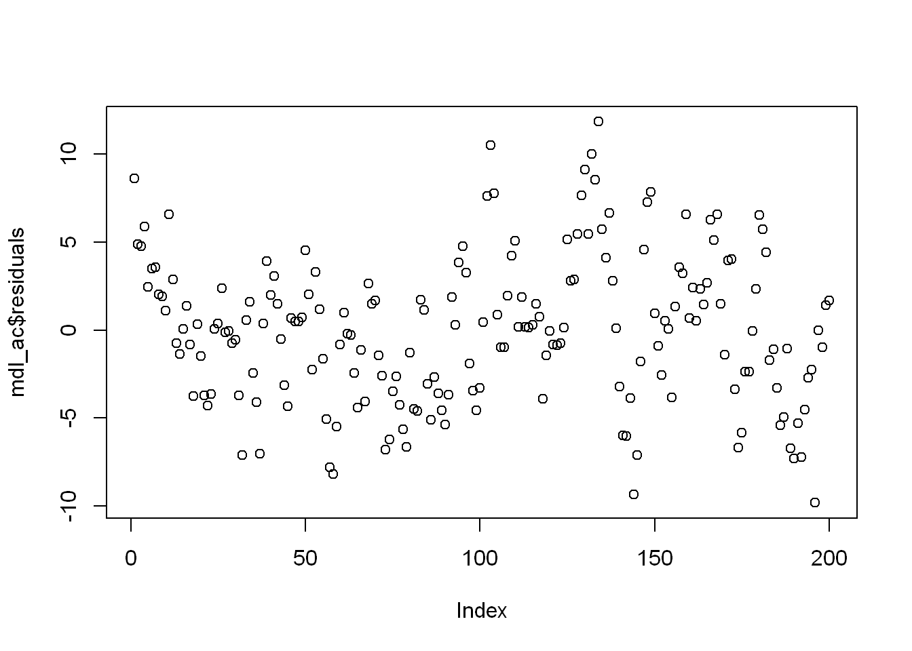
The residual plot shows the telltale signs of autocorrelation: long runs of positive and negative residuals. It is more obvious if we smooth the pattern:
r <- mdl_ac$residuals
n <- 1:length(r)
plot(r)
lines(predict(loess(r ~ n)), col = "red", lwd = 2)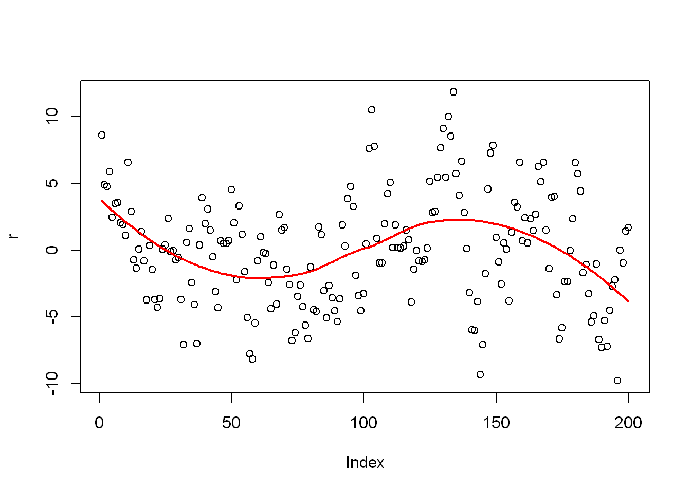
The pattern also shows up in the residuals’ correlogram, where the autocorrelations at the first several lags are well outside the confidence bands:
Acf(r)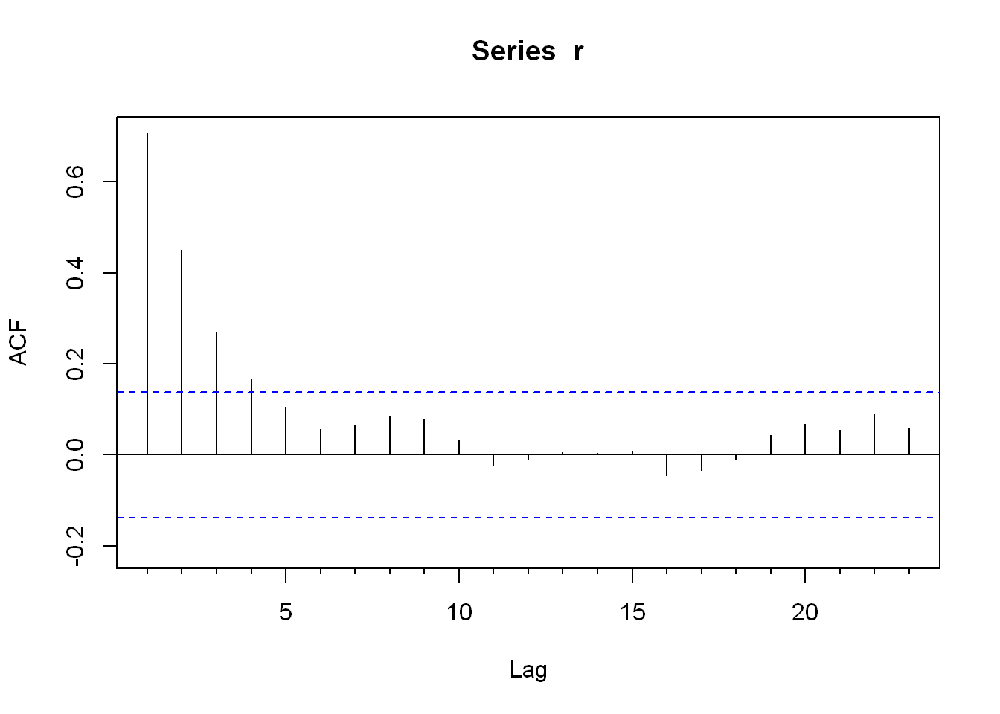
Breusch-Godfrey (BG or LM) test for autocorrelation:
\[\left\{\begin{array}{l}H_{0}: \rho_{1}=\ldots=\rho_{p}=0 \\ H_{1}: \rho_{j} \neq 0, \text { for some } j\end{array}\right.\]
To test the null hypothesis of no autocorrelation in the first three lags of the residuals:
bgtest(mdl_ac, order = 3)
Breusch-Godfrey test for serial correlation of order up to 3
data: mdl_ac
LM test = 100.72, df = 3, p-value < 2.2e-16Since the p-value < 0.05, we reject the null hypothesis and conclude that there is serial correlation in the residuals.
If we find autocorrelation, we need to re-specify the model to account for (or estimate) the relationships among the error terms. In time-series analysis, where observations are taken sequentially over time, we would typically include a “lag” term (in which the value of \(Y\) in period \(t\) is predicted by the value of \(Y\) in period \(t-1\)). This is a typical AR(1) model, which is discussed in time-series analysis. The entangled residuals can, of course, be much more complex and require more specialized models (e.g., ARIMA or vector autoregression models). These approaches will be studied next semester.
As a band-aid, we can calculate heteroskedasticity-and-autocorrelation-consistent (HAC) standard errors to improve inference:
coeftest(mdl_ac, vcov. = vcovHAC(mdl_ac))
t test of coefficients:
Estimate Std. Error t value Pr(>|t|)
(Intercept) 10.616005 1.165046 9.1121 < 2.2e-16 ***
x1 4.890185 0.413444 11.8279 < 2.2e-16 ***
x2 -2.936860 0.060834 -48.2769 < 2.2e-16 ***
---
Signif. codes: 0 '***' 0.001 '**' 0.01 '*' 0.05 '.' 0.1 ' ' 19 Normality
The hypothesis we want to test is:
\[ \begin{cases}H_{0}: & \text{residuals follow a normal distribution} \\ H_{1}: & \text{residuals do not follow a normal distribution}\end{cases} \]
We carry out the following tests and combine their p-values in a single table:
norm_tests.df <- data.frame(Tests = c("Anderson-Darling", "Shapiro-Wilk",
"Cramer-von Mises", "Jarque-Bera"))
norm_tests.df$p_vals <- c(ad.test(mdl_ac$residuals)$p.value,
shapiro.test(mdl_ac$residuals)$p.value,
cvm.test(mdl_ac$residuals)$p.value,
jarque.bera.test(mdl_ac$residuals)$p.value)
kable(norm_tests.df, digits = 2, align = "c", caption = "Normality tests: mdl_ac residuals")| Tests | p_vals |
|---|---|
| Anderson-Darling | 0.56 |
| Shapiro-Wilk | 0.55 |
| Cramer-von Mises | 0.56 |
| Jarque-Bera | 0.43 |
All four p-values are above the 5% significance level, so we cannot reject the null hypothesis of normality. Note that failing to reject is not proof that the residuals are normal - only that the tests found no evidence against it. Note also that Gaussian white noise requires both independence and normality: these residuals look normal but are serially correlated.
Compare this with our earlier model of the quadratic DGP:
norm_tests.df$p_vals <- c(ad.test(mdl_quad$residuals)$p.value,
shapiro.test(mdl_quad$residuals)$p.value,
cvm.test(mdl_quad$residuals)$p.value,
jarque.bera.test(mdl_quad$residuals)$p.value)
kable(norm_tests.df, digits = 2, align = "c", caption = "Normality tests: mdl_quad residuals")| Tests | p_vals |
|---|---|
| Anderson-Darling | 0 |
| Shapiro-Wilk | 0 |
| Cramer-von Mises | 0 |
| Jarque-Bera | 0 |
According to all four tests we reject \(H_0\) that the residuals are normally distributed. This can also be seen in the quantile-quantile (Q-Q) plots:
plot(mdl_quad, 2)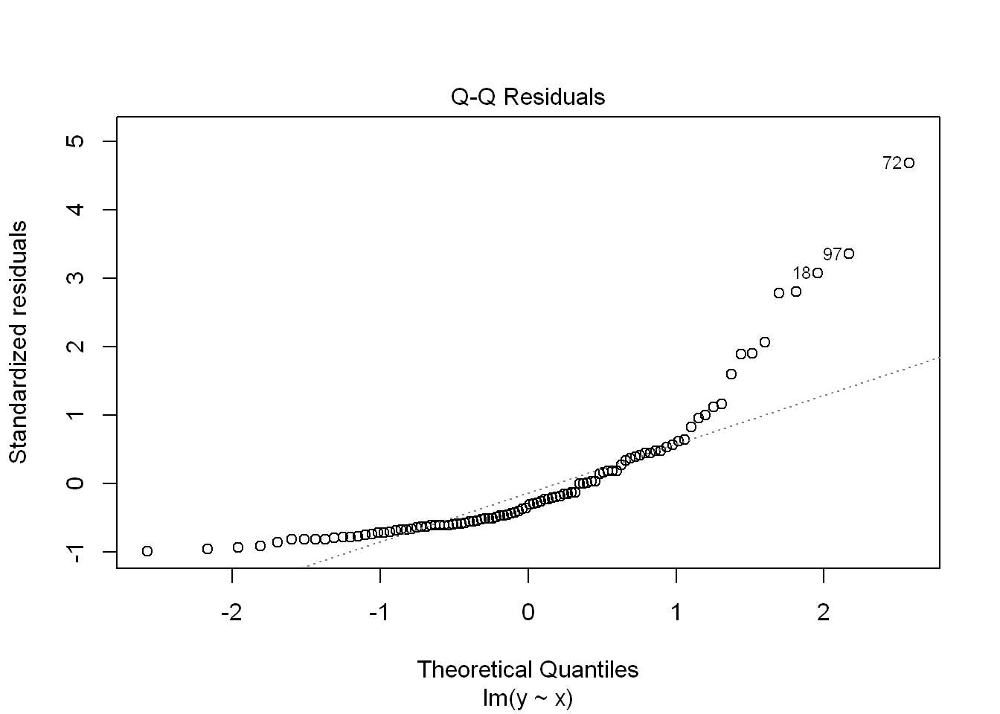
plot(mdl_ac, 2)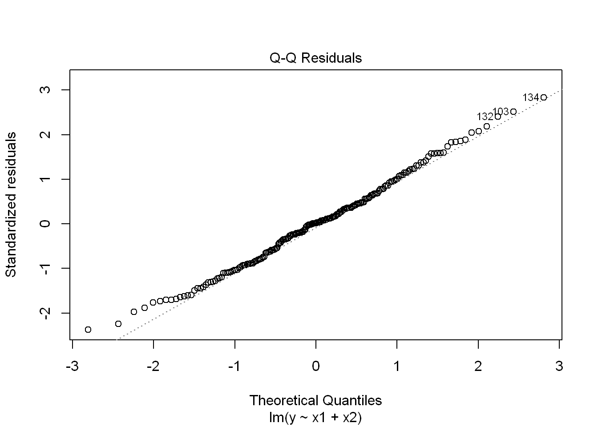
Normality is last on the list of concerns for a reason: in samples of a few hundred observations, the \(t\)-tests are approximately valid even when the errors are not normal. Normality tests also have the opposite problem in very large samples, where they reject departures far too small to matter. For our climate change model:
shapiro.test(ols1$residuals)
Shapiro-Wilk normality test
data: ols1$residuals
W = 0.99566, p-value = 0.2485plot(ols1, 2)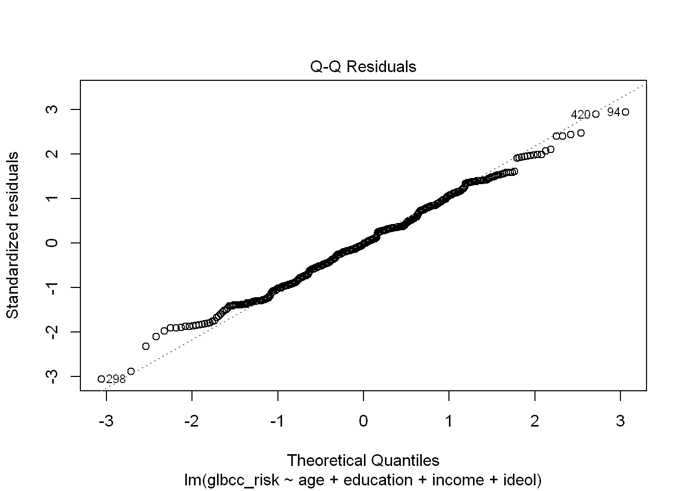
We cannot reject normality, and the Q-Q plot stays close to the line. With 450 observations, normality is not a concern for this model.
10 Back to the Start: A Revised Model
Our diagnostics found one substantive problem with the climate change model: the effect of ideology is not linear. In the squared-terms model, only ideology2 mattered, so the revised model adds just that term:
ols3 <- lm(glbcc_risk ~ age + education + income + ideol + I(ideol^2), data = ds.small)
anova(ols1, ols3)resettest(ols3, power = 2:3, type = "regressor")
RESET test
data: ols3
RESET = 0.78486, df1 = 10, df2 = 434, p-value = 0.6435The squared term improves the fit, and the RESET test no longer rejects. As the introduction says, a changed model sends us back through the checklist. (One thing to expect: vif(ols3) will be large for ideol and I(ideol^2), because a variable and its square are naturally correlated. This is harmless and doesn’t signal a problem with the model.)
modelsummary() puts the two models side by side. Since we found heteroskedasticity, we report HC3 robust standard errors (in parentheses):
modelsummary(list("Original" = ols1, "Revised" = ols3),
vcov = "HC3", stars = TRUE, fmt = fmt_significant(2))| Original | Revised | |
|---|---|---|
| + p < 0.1, * p < 0.05, ** p < 0.01, *** p < 0.001 | ||
| (Intercept) | 12.08*** | 9.73*** |
| (0.67) | (0.94) | |
| age | -0.0056 | -0.0032 |
| (0.0080) | (0.0081) | |
| education | -0.019 | 0.0095 |
| (0.070) | (0.0700) | |
| income | 1.9e-07 | 2.6e-07 |
| (2.3e-06) | (2.3e-06) | |
| ideol | -1.22*** | -0.11 |
| (0.06) | (0.30) | |
| I(ideol^2) | -0.128*** | |
| (0.035) | ||
| Num.Obs. | 450 | 450 |
| R2 | 0.437 | 0.450 |
| R2 Adj. | 0.431 | 0.443 |
| AIC | 2054.2 | 2045.7 |
| BIC | 2078.9 | 2074.5 |
| Log.Lik. | -1021.111 | -1015.846 |
| F | 106.795 | 90.575 |
| RMSE | 2.34 | 2.31 |
| Std.Errors | HC3 | HC3 |
The main conclusion is unchanged: concern about climate change falls as ideology becomes more conservative. The revised model adds that the decline steepens toward the conservative end. Note that the linear ideol coefficient in the revised model is not significant on its own; with a squared term, the effect of ideology depends on both coefficients together.
11 Interpreting the Quadratic: marginaleffects
With a squared term, the coefficients in the table above are no longer the answer to “what is the effect of ideology?”. The ideol coefficient (\(-0.11\), not significant) is the slope at ideol = 0, a value that doesn’t exist on our 1-7 scale. The effect of a one-unit change in ideology now depends on where you start:
\[\frac{\partial\, \widehat{\text{risk}}}{\partial\, \text{ideol}} = \hat\beta_{\text{ideol}} + 2\,\hat\beta_{\text{ideol}^2} \times \text{ideol}\]
The marginaleffects package does these calculations for us, with standard errors, for any model. Here we pass vcov = "HC3" so the standard errors stay robust.
Why I(ideol^2) and not a separate ideology2 column? marginaleffects works by changing ideol slightly and re-computing the predictions. With I(ideol^2) in the formula, R squares the new value automatically. If we had used the ideology2 column from ols2, the package would treat it as a separate variable that stays fixed when ideol changes, and the answers would be wrong.
11.1 Predictions
What does the model predict at each level of ideology? datagrid() builds the scenarios: each ideology level, with the other variables held at their means (rounded for whole-number variables like age and education).
predictions(ols3, newdata = datagrid(ideol = 1:7), vcov = "HC3")
ideol Estimate Std. Error z Pr(>|z|) S 2.5 % 97.5 %
1 9.37 0.302 31.0 <0.001 699.1 8.77 9.96
2 8.88 0.165 53.8 <0.001 Inf 8.55 9.20
3 8.13 0.148 54.9 <0.001 Inf 7.84 8.42
4 7.13 0.164 43.6 <0.001 Inf 6.81 7.45
5 5.88 0.152 38.8 <0.001 Inf 5.58 6.18
6 4.37 0.148 29.6 <0.001 635.2 4.08 4.66
7 2.60 0.254 10.2 <0.001 79.3 2.10 3.10
Type: responseplot_predictions(ols3, condition = "ideol", vcov = "HC3")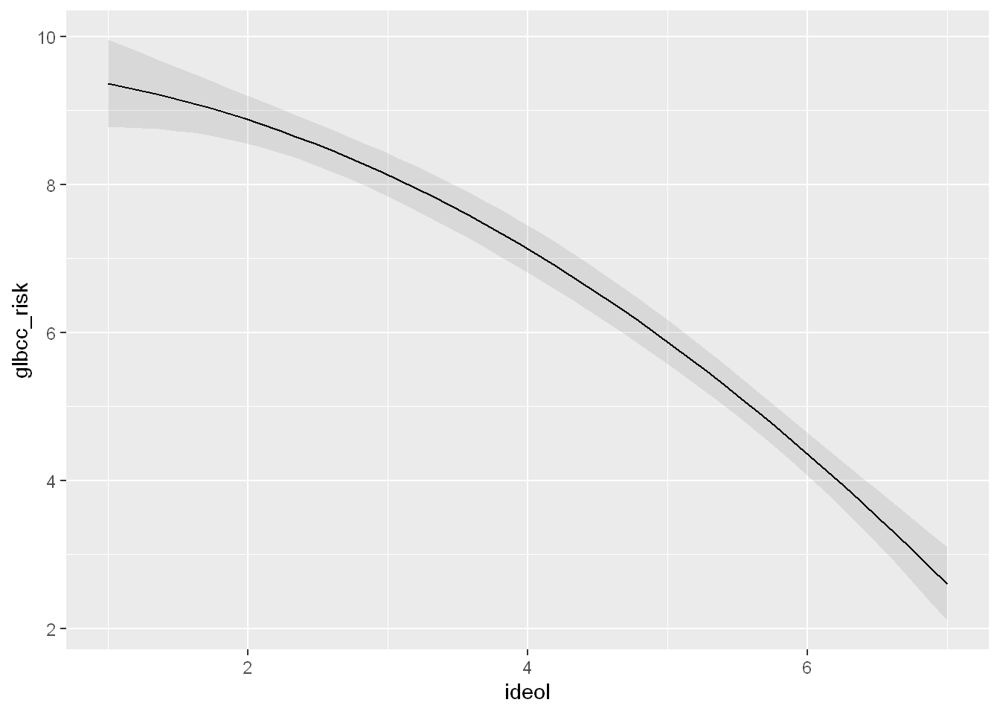
Predicted risk falls from about 9.4 for the most liberal respondents to about 2.6 for the most conservative, and the curve gets steeper as we move to the right.
11.2 Slopes (marginal effects)
The slope of that curve at each ideology level:
slopes(ols3, variables = "ideol", newdata = datagrid(ideol = 1:7), vcov = "HC3")
ideol Estimate Std. Error z Pr(>|z|) S 2.5 % 97.5 %
1 -0.362 0.2277 -1.59 0.112 3.2 -0.808 0.0847
2 -0.617 0.1605 -3.84 <0.001 13.0 -0.931 -0.3022
3 -0.872 0.0977 -8.93 <0.001 61.0 -1.063 -0.6805
4 -1.127 0.0565 -19.95 <0.001 291.7 -1.238 -1.0165
5 -1.382 0.0835 -16.55 <0.001 201.9 -1.546 -1.2187
6 -1.638 0.1444 -11.34 <0.001 96.6 -1.921 -1.3546
7 -1.893 0.2101 -9.01 <0.001 62.1 -2.305 -1.4812
Term: ideol
Type: response
Comparison: dY/dXplot_slopes(ols3, variables = "ideol", condition = "ideol", vcov = "HC3")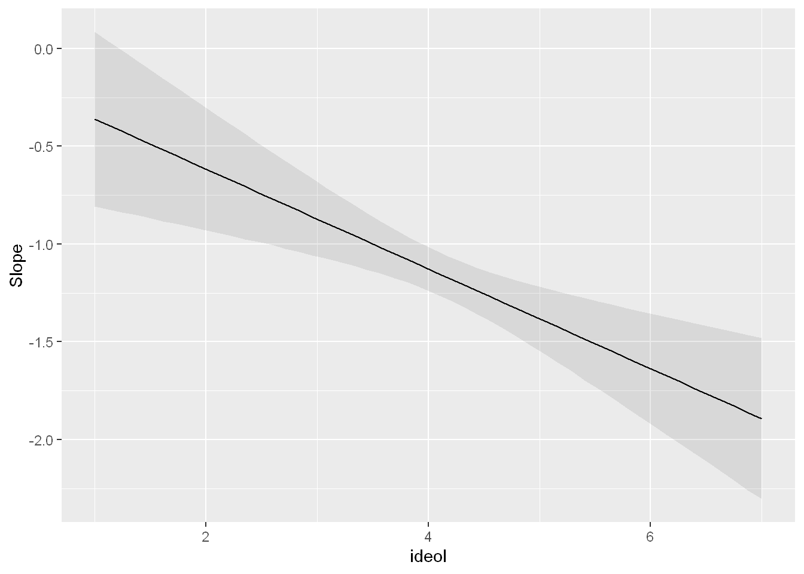
At the liberal end, moving one point more conservative lowers predicted risk by about 0.36 (not significantly different from zero, \(p \approx 0.11\)); at the conservative end, by about 1.89 - five times as much. The slope plot is a straight line because the derivative of a quadratic is linear in ideol.
11.3 The average marginal effect
To summarize the effect in one number, average the slope over every respondent in the sample:
avg_slopes(ols3, variables = "ideol", vcov = "HC3")
Estimate Std. Error z Pr(>|z|) S 2.5 % 97.5 %
-1.32 0.0714 -18.5 <0.001 250.5 -1.46 -1.18
Term: ideol
Type: response
Comparison: dY/dXThe average marginal effect, about \(-1.32\), is close to the \(-1.22\) from the original linear model. That is typical: the linear model estimates roughly the average slope, while the quadratic shows how the slope changes along the scale.
11.4 Comparing two specific values
We can also ask a direct question: how much does predicted risk differ between a very liberal (1) and a very conservative (7) respondent, all else equal?
avg_comparisons(ols3, variables = list(ideol = c(1, 7)), vcov = "HC3")
Estimate Std. Error z Pr(>|z|) S 2.5 % 97.5 %
-6.76 0.34 -19.9 <0.001 289.8 -7.43 -6.1
Term: ideol
Type: response
Comparison: 7 - 1About 6.8 points on a 0-10 scale - by far the largest effect in the model.
12 The TLDR Version: plot(lm)
R has a set of diagnostic plots built into the plot() function for any lm() model. The examples above should help in interpreting them:
| Plot | What to look for | Section |
|---|---|---|
| 1. Residuals vs Fitted | a curved pattern: non-linearity | Non-linearity |
| 2. Q-Q Residuals | points far off the line: non-normality | Normality |
| 3. Scale-Location | a trend in the spread: heteroskedasticity | Heteroskedasticity |
| 4. Cook’s distance | individual cases with large influence | Influence: Cook’s distance |
| 5. Residuals vs Leverage | points beyond the Cook’s distance contours | Outliers, Leverage and Influence |
| 6. Cook’s dist vs Leverage | influence and leverage together | Outliers, Leverage and Influence |
Here is how to view them all for our climate change model:
par(mfrow = c(3, 2), mar = c(4, 4, 2, 1))
plot(ols1, 1:6)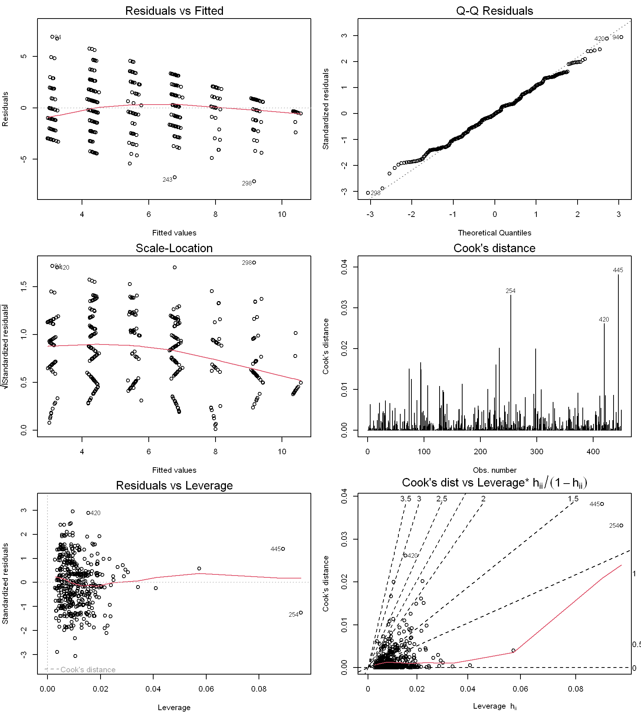
Or, to display an individual plot:
plot(ols1, 1)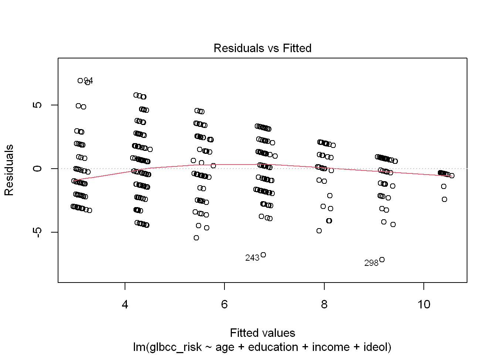
End of Notebook